The Intersection of Philology, Systems Programming, and Level Design
I design gameplay spaces where environmental structures, mechanics, and code act as a non-verbal narrative language. Form follows text; level structure emerges from core character intent.
UE5 Prototype / Greybox
Leon: The Game
A multi-system stealth adaptation exploring mechanical tension, spatial pacing, and adaptive companion logic.
Python / Pygame Framework
Unspoken Dialogue
A narrative-driven 2D platformer analyzing mechanical friction and movement pacing as metaphors for psychological stress.
Based on the formal structure of the classic text, this prototype focuses on the dynamic interaction between a professional hitman and his apprentice. The level pacing transitions deliberately from tight, claustrophobic corridors into open, high-exposure combat topologies.
Core Spatial Pacing & Mechanics
Demonstrating player movement translation through the greybox layout. This captures the primary mechanical flow, including climbing transitions and cover interactions.
Level Topology & Signposting
Macro-views of architectural layout. The placement of high-contrast red blocks defines immediate line-of-sight danger vectors, establishing an intuitive visual vocabulary that guides pathing without intrusive UI markers.
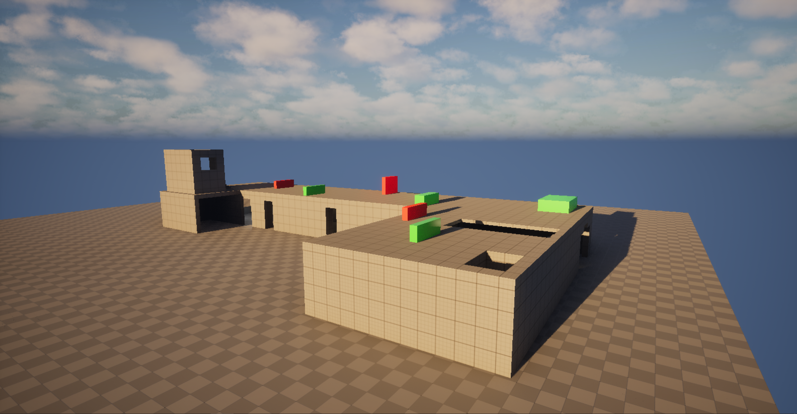
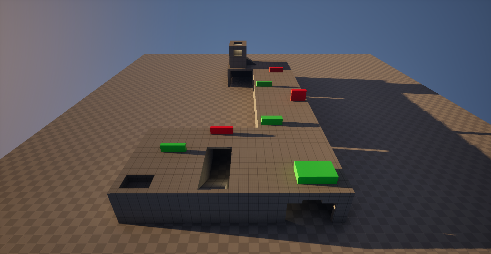
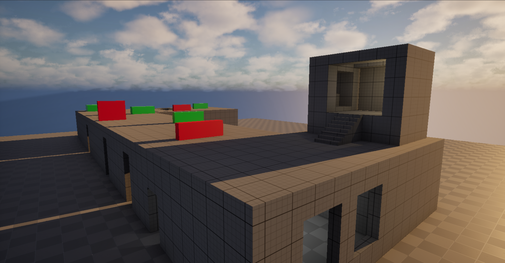
Atmosphere, Lighting & Aesthetic Iteration
Testing Neo-Noir contrast principles. The design implements "Tungsten Warmth" (yellow/orange tones) to mark internal safe hubs ("The Womb") and shifts to "Fluorescent Cold" (sterile blues and whites) for hostile spaces.
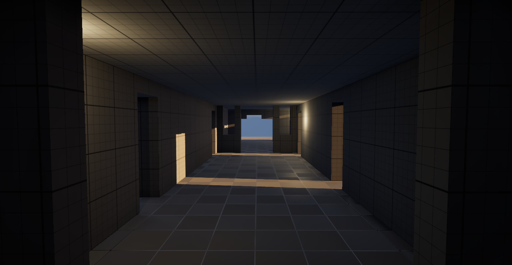
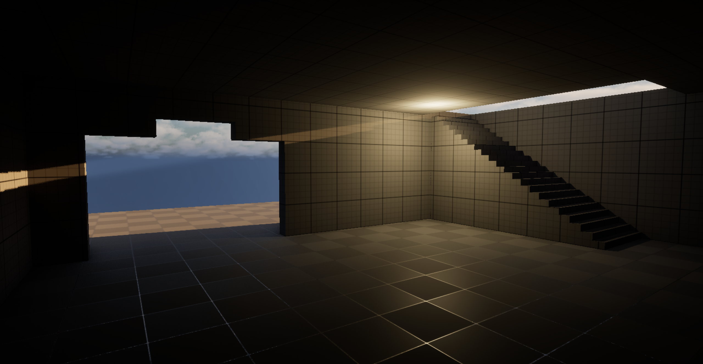
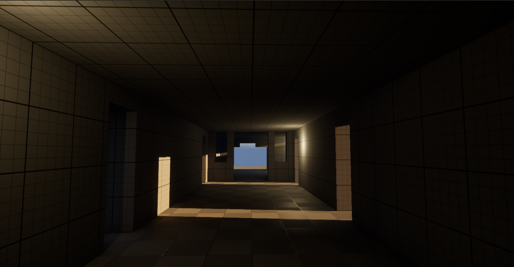
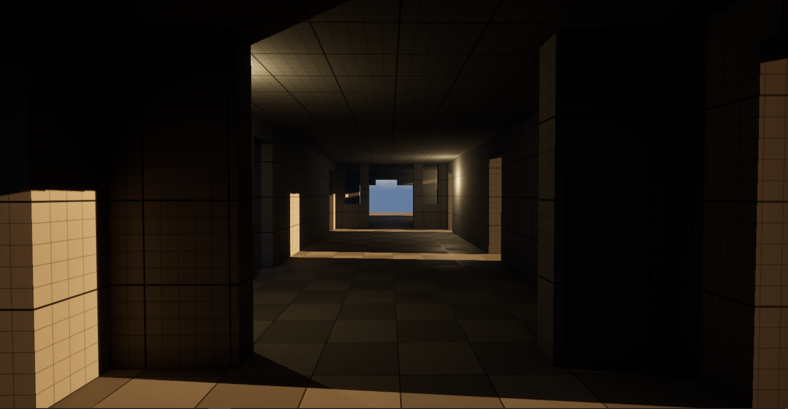
Iterative lighting validation: evaluating geometry readability and clear navigation paths under standard daylight conditions prior to baking final dark aesthetics.
Technical Architecture (UE5 Blueprints)
Custom engine implementations behind the prototype flow. Includes aiming field-of-view camera lerping, responsive mouse/gamepad camera rotation modifiers, and jump velocity curves modified by character inventory loadout constraints.
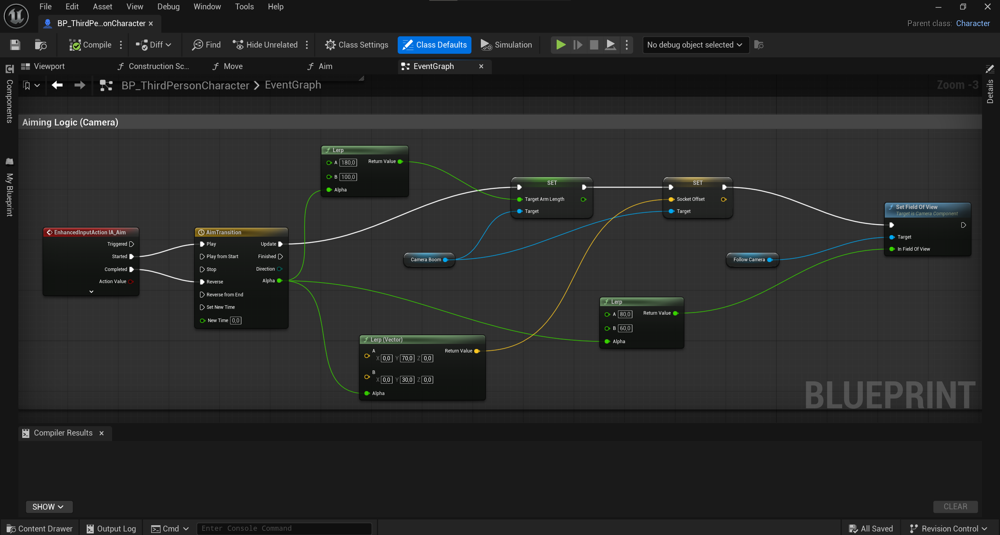
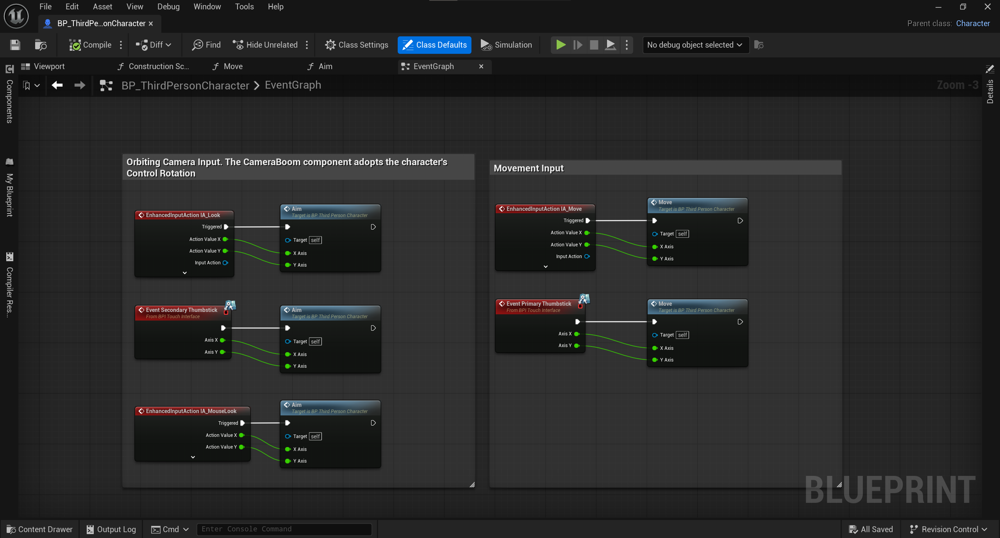
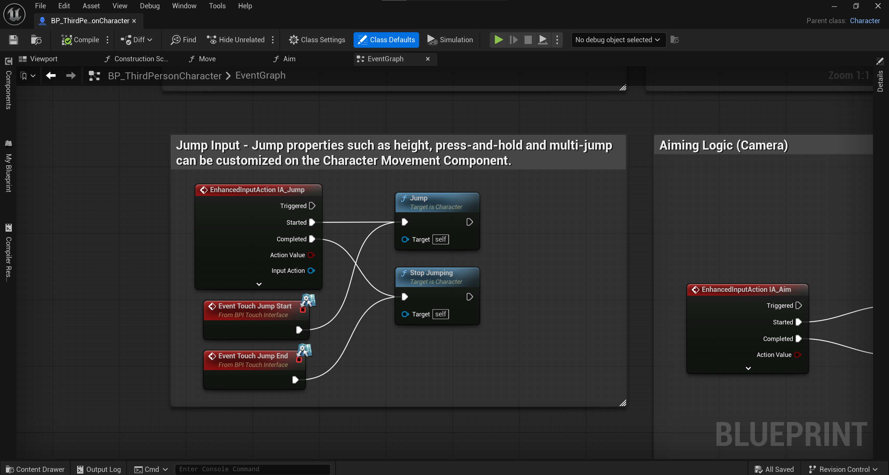
Comprehensive Documentation
The complete systemic framework covering the partner-switching system, interactive hub loops (Plant Care, Milk Consumption mechanics), skill-tree branching, and the "Code Violation" automatic failure triggers.
An exploration of mechanical friction where game logic explicitly mirrors narrative subtext. Rather than utilizing pre-built engine packages, all core mechanics—including customized gravity vectors, precise acceleration tables, and state-machine animations—were developed entirely from scratch in pure Python.
Gameplay Structure & Environmental Rhythm
Visual narrative pacing within the platformer environment, using responsive retro-inspired constraints to dictate player tension and mechanical urgency.
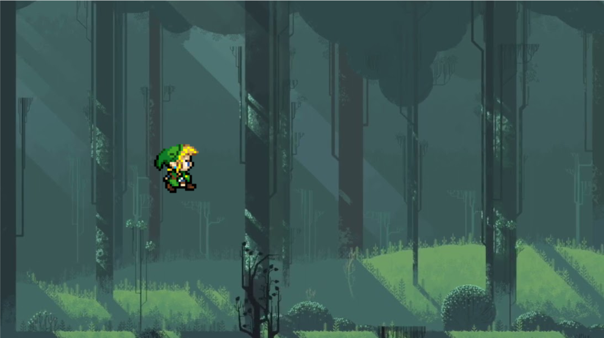
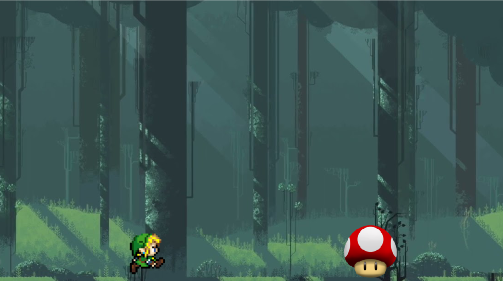
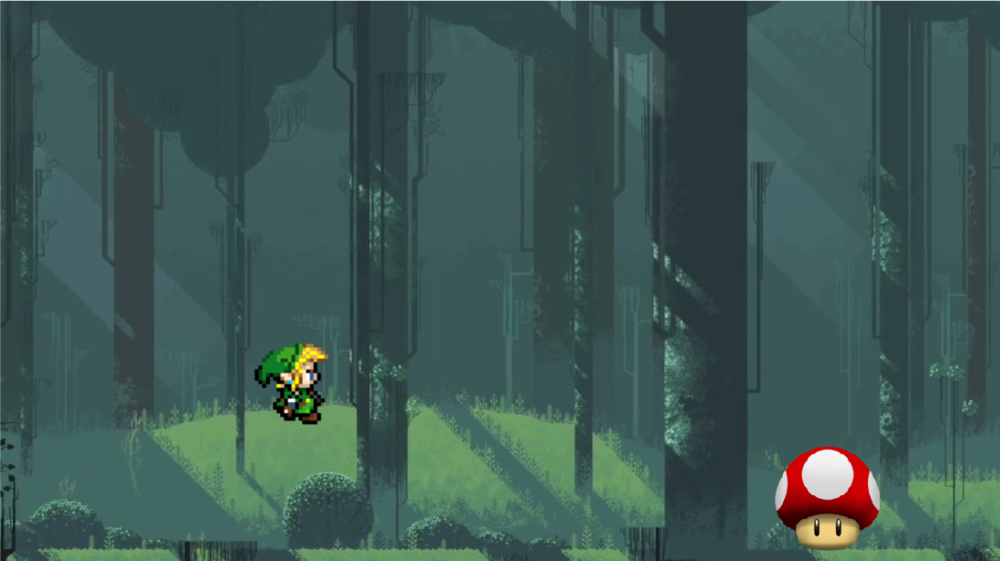
Systemic Architecture (Python Source Code)
Excerpts from the primary execution script. Focus points include the bespoke integration of vertical step velocities, delta-time execution safeguards fixed at 144Hz, frame-by-frame asset blitting arrays, and manual keyboard hardware state polling via Pygame vectors.